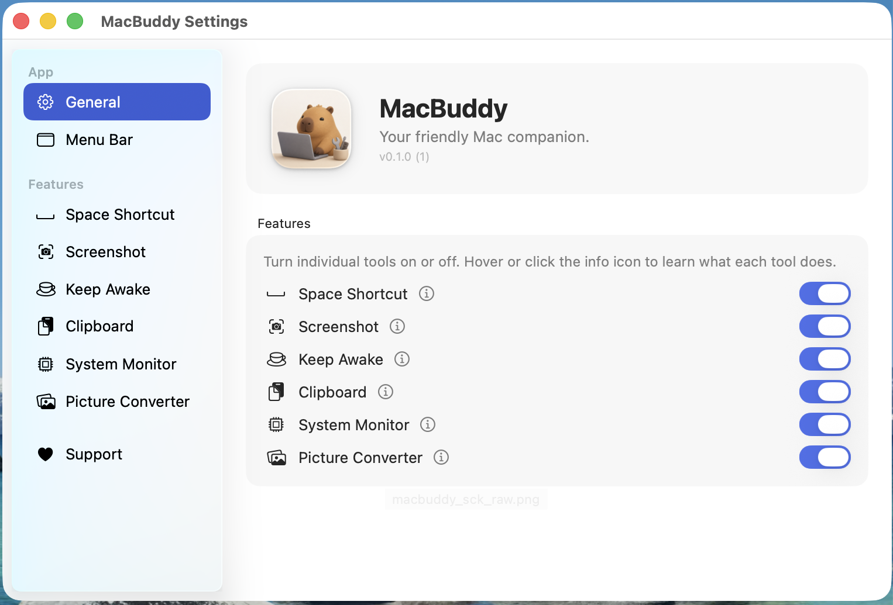
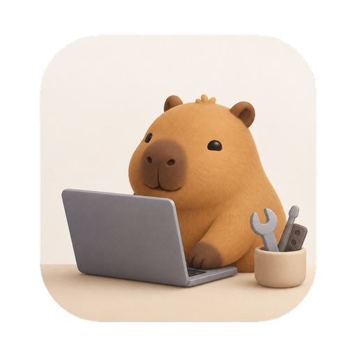
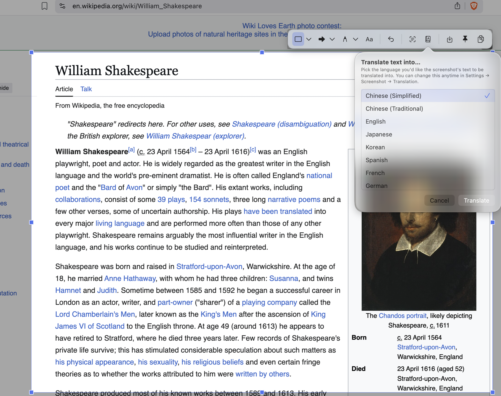
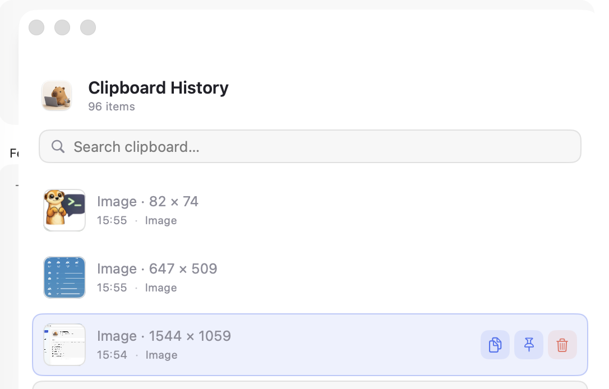
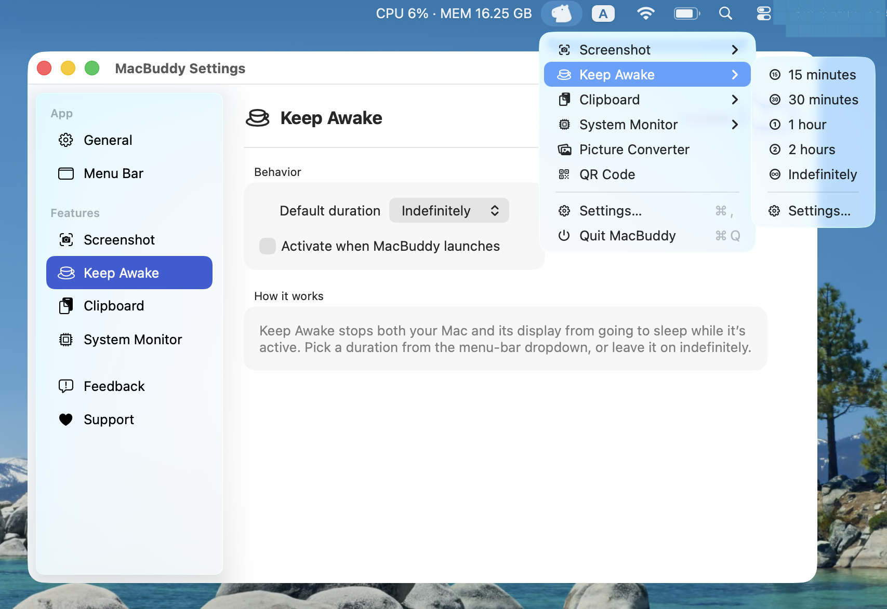
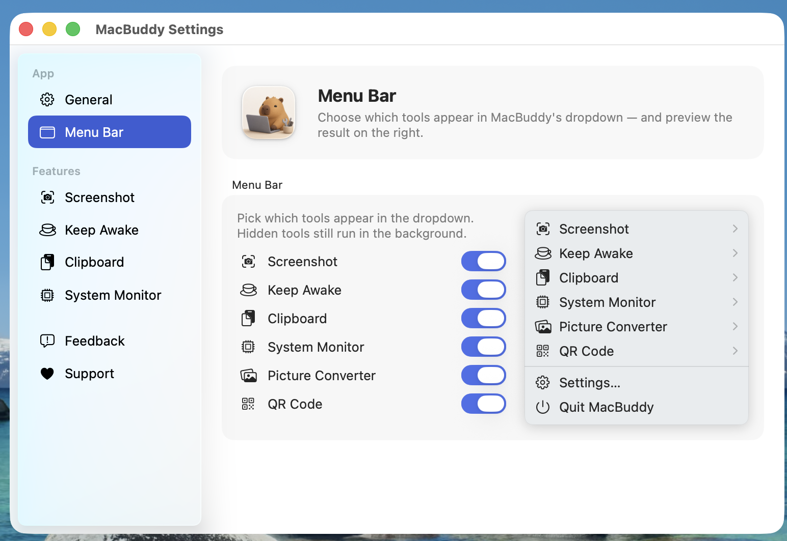
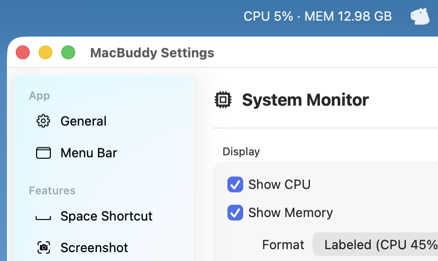

Screenshot
Region capture with a global hotkey, then annotate, translate, copy, save, or pin the result.
Six handy menu-bar tools, wrapped in one tidy app. Capture and translate screenshots, generate QR codes, keep your Mac awake, browse clipboard history, watch CPU + memory, and convert pictures — all from a single buddy in your menu bar.


Capture and translate, generate QR codes, browse clipboard history, and tune every tool from Settings.








Each tool is independent — turn off the ones you don't need from Settings.
Region capture with a global hotkey, then annotate, translate, copy, save, or pin the result.
Prevents your Mac from sleeping or dimming the display for a chosen duration.
Keeps a searchable history of recent clipboard items, including images. Pin the ones you reuse.
Adds a menu-bar status item showing live CPU, memory, and other system stats.
Drag-and-drop converter between PNG, JPEG, HEIC, TIFF, GIF, AVIF, ICO, BMP, ICNS, JP2.
Generate scannable QR codes with custom colors, dot & eye shapes, and an embedded logo.
Free. No ads. Apple Silicon & Intel.
Found a bug? Want a new tool inside MacBuddy? Tell us — issues land straight in the project's GitHub.
Something not working? Open a bug report — we'll be notified on GitHub.
Open bug report →Got an idea for a new tool inside MacBuddy? Pitch it.
Suggest a feature →Stuck on permissions or hotkeys? Drop a question.
Ask a question →No GitHub account needed — your feedback goes straight to our issue tracker. Prefer email? dev@atlai.co.uk.